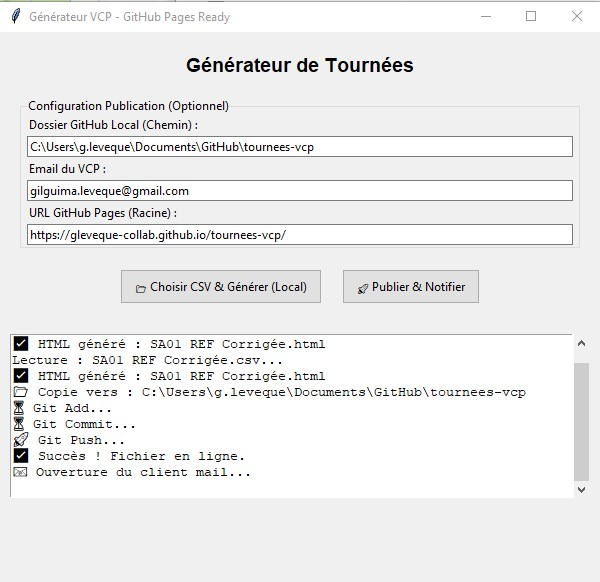
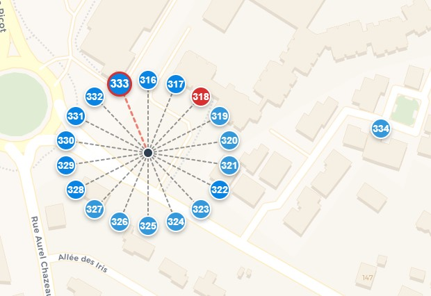
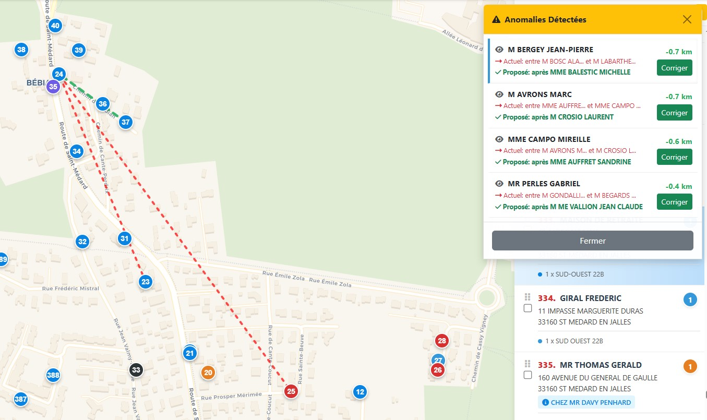
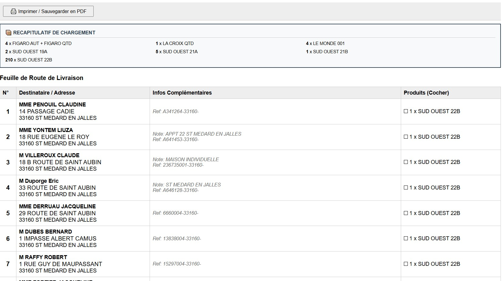

1. Lancement & Génération
Au démarrage de l'application, vous arrivez sur cet écran de contrôle.

L'interface principale.
Ce que vous devez faire :
- L'Email du VCP est détecté automatiquement si le fichier contient un code tournée connu (ex: SA01).
Option A : Local (Test)
Cliquez sur 📂 Choisir CSV & Générer (Local) pour créer la carte sur votre ordinateur.
Cliquez sur 📂 Choisir CSV & Générer (Local) pour créer la carte sur votre ordinateur.
Option B : Envoi VCP (Final)
Cliquez sur 🚀 Publier & Notifier pour mettre en ligne et envoyer l'email.
Cliquez sur 🚀 Publier & Notifier pour mettre en ligne et envoyer l'email.
2. Comprendre la Carte
La carte affiche tous les clients. Les numéros correspondent à l'ordre de passage.
Les "Piles" (Adresses Multiples)

Cliquez sur un groupe pour déployer la "Toile d'araignée".
Astuce : Cliquez sur le point noir central pour voir la liste complète des résidents.
3. Recherche Rapide

Tapez un Nom, une Rue ou une Ville pour filtrer instantanément la liste et la carte.
4. La Fiche Client

Vérifications
- Street View : Ouvre Google Maps devant l'adresse.
- Score BAN : Vérifie si l'adresse est officielle (Vert) ou inconnue (Rouge).
5. Modifier l'Ordre (Drag & Drop)
Comment faire ?
- Attrapez la poignée ⋮⋮ à gauche d'un client et glissez-le.
Sélection Multiple : Cochez plusieurs cases ☑, déplacez-en un seul, le groupe suit !
6. Diagnostic
Détecte les détours inutiles (> 400m).

- Cliquez sur le Stéthoscope.
- Cliquez sur une anomalie pour voir le tracé (Rouge = Actuel, Vert = Proposé).
- Cliquez sur Corriger.
7. Impression & Export
CSV
Télécharge un fichier Excel format RNC.
Imprimer
Génère une Feuille de Route PDF.
